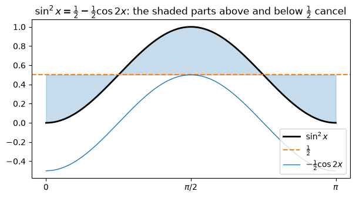
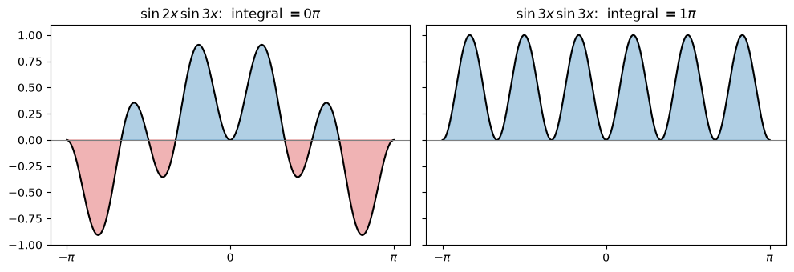

Code
import numpy as np
import sympy as sp
import matplotlib.pyplot as plt
from IPython.display import Math, display
sp.init_printing()
x, u = sp.symbols("x u")Miraj Samarakkody
October 15, 2026
Stewart, Calculus, §7.2
Learning objectives. By the end of this lecture you should be able to: 1. Integrate \(\sin^m x\cos^n x\) by saving one factor and substituting, or with half-angle identities. 2. Integrate \(\tan^m x\sec^n x\) the same way. 3. Find \(\int\tan x\,dx\), \(\int\sec x\,dx\) and \(\int\sec^3 x\,dx\). 4. Use product-to-sum identities for \(\sin mx\cos nx\), \(\sin mx\sin nx\) and \(\cos mx\cos nx\). 5. Check every answer symbolically with SymPy and numerically with NumPy.
Every technique in this section uses one of these identities to rewrite the integrand.
| Name | Identity |
|---|---|
| Pythagorean | \(\sin^2 x + \cos^2 x = 1\) |
| Pythagorean (tan/sec) | \(\tan^2 x + 1 = \sec^2 x\) |
| Half-angle | \(\sin^2 x = \tfrac12(1 - \cos 2x)\) |
| Half-angle | \(\cos^2 x = \tfrac12(1 + \cos 2x)\) |
| Double-angle | \(\sin x\cos x = \tfrac12\sin 2x\) |
We also need these derivatives, because they decide which substitution works: \[\frac{d}{dx}\sin x = \cos x,\qquad \frac{d}{dx}\cos x = -\sin x,\qquad \frac{d}{dx}\tan x = \sec^2 x,\qquad \frac{d}{dx}\sec x = \sec x\tan x.\]
Let’s confirm the identities with SymPy:
identities = {
r"\sin^2 x + \cos^2 x = 1": sp.sin(x)**2 + sp.cos(x)**2 - 1,
r"\tan^2 x + 1 = \sec^2 x": sp.tan(x)**2 + 1 - sp.sec(x)**2,
r"\sin^2 x = \tfrac12(1-\cos 2x)": sp.sin(x)**2 - (1 - sp.cos(2 * x)) / 2,
r"\cos^2 x = \tfrac12(1+\cos 2x)": sp.cos(x)**2 - (1 + sp.cos(2 * x)) / 2,
r"\sin x\cos x = \tfrac12\sin 2x": sp.sin(x) * sp.cos(x) - sp.sin(2 * x) / 2,
}
for name, diff in identities.items():
display(Math(name + rf"\quad\text{{: {sp.simplify(diff) == 0}}}"))\(\displaystyle \sin^2 x + \cos^2 x = 1\quad\text{: True}\)
\(\displaystyle \tan^2 x + 1 = \sec^2 x\quad\text{: True}\)
\(\displaystyle \sin^2 x = \tfrac12(1-\cos 2x)\quad\text{: True}\)
\(\displaystyle \cos^2 x = \tfrac12(1+\cos 2x)\quad\text{: True}\)
\(\displaystyle \sin x\cos x = \tfrac12\sin 2x\quad\text{: True}\)
As in §7.1, we check every antiderivative by differentiating it. Trig answers can look very different and still be equal, so if simplify cannot reduce \(F' - f\) to \(0\), the function also compares \(F'\) and \(f\) numerically at a few points.
def check(F, integrand, var=x):
# Verify F' = integrand: symbolically first, then numerically at sample points
diff = sp.diff(F, var) - integrand
ok = sp.simplify(diff) == 0
if not ok:
pts = [0.3, 0.7, 1.1, 2.0, -0.4]
ok = all(abs(complex(diff.subs(var, p).evalf())) < 1e-10 for p in pts)
print("d/dx(answer) == integrand:", ok)
return okThe substitution \(u = \cos x\) doesn’t work, because \(du = -\sin x\,dx\) and there is no \(\sin x\) in the integrand. Instead, save one factor of \(\cos x\) for \(du\) and turn the rest into sines: \[\cos^3 x = \cos^2 x\cdot\cos x = (1 - \sin^2 x)\cos x.\] Now \(u = \sin x\), \(du = \cos x\,dx\): \[\int\cos^3 x\,dx = \int(1 - u^2)\,du = u - \tfrac13u^3 + C = \sin x - \tfrac13\sin^3 x + C.\]
\(\displaystyle \int(1-u^2)\,du = - \frac{u^{3}}{3} + u\qquad\Longrightarrow\qquad \int\cos^3x\,dx = - \frac{\sin^{3}{\left(x \right)}}{3} + \sin{\left(x \right)} + C\)
d/dx(answer) == integrand: TrueThis time the power of sine is odd. Save one \(\sin x\) for \(du\) and convert the remaining \(\sin^4 x\) into cosines: \[\sin^5 x\cos^2 x = (\sin^2 x)^2\cos^2 x\cdot\sin x = (1 - \cos^2 x)^2\cos^2 x\,\sin x.\] With \(u = \cos x\), \(du = -\sin x\,dx\): \[\begin{aligned} \int\sin^5 x\cos^2 x\,dx &= -\int(1 - u^2)^2u^2\,du = -\int(u^2 - 2u^4 + u^6)\,du\\ &= -\tfrac13\cos^3 x + \tfrac25\cos^5 x - \tfrac17\cos^7 x + C. \end{aligned}\]
\(\displaystyle \int\sin^5x\cos^2x\,dx = - \frac{\cos^{7}{\left(x \right)}}{7} + \frac{2 \cos^{5}{\left(x \right)}}{5} - \frac{\cos^{3}{\left(x \right)}}{3} + C\)
d/dx(answer) == integrand: True| Case | Save | Convert the rest with | Substitute |
|---|---|---|---|
| power of \(\cos\) is odd | one \(\cos x\) | \(\cos^2 x = 1 - \sin^2 x\) | \(u = \sin x\) |
| power of \(\sin\) is odd | one \(\sin x\) | \(\sin^2 x = 1 - \cos^2 x\) | \(u = \cos x\) |
If both powers are odd, either choice works.
The function below does these steps for any \(m, n \ge 0\) with at least one odd. It shows the integral in \(u\), so you can compare it with your own work.
def sin_cos_odd(m, n):
# ∫ sin^m x cos^n x dx when m or n is odd, by saving one factor and substituting
if n % 2 == 1: # save cos x, u = sin x, du = cos x dx
sub, g = sp.sin(x), u**m * (1 - u**2)**((n - 1) // 2)
elif m % 2 == 1: # save sin x, u = cos x, du = -sin x dx
sub, g = sp.cos(x), -(1 - u**2)**((m - 1) // 2) * u**n
else:
raise ValueError("both powers are even: use the half-angle identities")
G = sp.integrate(sp.expand(g), u)
F = G.subs(u, sub)
display(Math(
rf"u = {sp.latex(sub)}:\quad \int \sin^{{{m}}}x\cos^{{{n}}}x\,dx = \int {sp.latex(sp.factor(g))}\,du"
rf" = {sp.latex(F)} + C"
))
return F
F = sin_cos_odd(2, 5)
check(F, sp.sin(x)**2 * sp.cos(x)**5);
F = sin_cos_odd(3, 3)
check(F, sp.sin(x)**3 * sp.cos(x)**3);\(\displaystyle u = \sin{\left(x \right)}:\quad \int \sin^{2}x\cos^{5}x\,dx = \int u^{2} \left(u - 1\right)^{2} \left(u + 1\right)^{2}\,du = \frac{\sin^{7}{\left(x \right)}}{7} - \frac{2 \sin^{5}{\left(x \right)}}{5} + \frac{\sin^{3}{\left(x \right)}}{3} + C\)
d/dx(answer) == integrand: True\(\displaystyle u = \sin{\left(x \right)}:\quad \int \sin^{3}x\cos^{3}x\,dx = \int - u^{3} \left(u - 1\right) \left(u + 1\right)\,du = - \frac{\sin^{6}{\left(x \right)}}{6} + \frac{\sin^{4}{\left(x \right)}}{4} + C\)
d/dx(answer) == integrand: TrueSaving one \(\sin x\) leaves \(\sin x\), which can’t be written in terms of \(\cos x\) without a square root. When both powers are even, use the half-angle identity instead: \[\int_0^\pi\sin^2 x\,dx = \tfrac12\int_0^\pi(1 - \cos 2x)\,dx = \tfrac12\Big[x - \tfrac12\sin 2x\Big]_0^\pi = \tfrac12\Big(\pi - \tfrac12\sin 2\pi\Big) - \tfrac12(0 - 0) = \frac{\pi}{2}.\]
Symbolic and numerical check:
\(\displaystyle \int_0^\pi\sin^2x\,dx = \frac{\pi}{2} \approx 1.5707963268\)
NumPy trapezoid: 1.5707963268Why \(\pi/2\)? The half-angle identity says \(\sin^2 x\) is the constant \(\tfrac12\) plus a cosine wave \(-\tfrac12\cos 2x\). Over a whole period the wave has zero net area, so only the \(\tfrac12\) is left: \(\tfrac12\cdot\pi\).
t = np.linspace(0, np.pi, 400)
fig, ax = plt.subplots(figsize=(7, 3.5))
ax.plot(t, np.sin(t)**2, "k", lw=2, label=r"$\sin^2 x$")
ax.axhline(0.5, color="C1", ls="--", label=r"$\frac{1}{2}$")
ax.plot(t, -0.5 * np.cos(2 * t), color="C0", lw=1, label=r"$-\frac{1}{2}\cos 2x$")
ax.fill_between(t, 0.5, np.sin(t)**2, alpha=0.25, color="C0")
ax.set_xticks([0, np.pi / 2, np.pi], ["0", r"$\pi/2$", r"$\pi$"])
ax.set_title(r"$\sin^2 x = \frac{1}{2} - \frac{1}{2}\cos 2x$: the shaded parts above and below $\frac{1}{2}$ cancel")
ax.legend(loc="lower right")
plt.show()
Use the half-angle identity, then use it again on \(\cos^2 2x = \tfrac12(1 + \cos 4x)\): \[\begin{aligned} \int\sin^4 x\,dx &= \int\Big(\frac{1 - \cos 2x}{2}\Big)^2dx = \tfrac14\int(1 - 2\cos 2x + \cos^2 2x)\,dx\\ &= \tfrac14\int\Big(\tfrac32 - 2\cos 2x + \tfrac12\cos 4x\Big)dx\\ &= \tfrac38x - \tfrac14\sin 2x + \tfrac1{32}\sin 4x + C. \end{aligned}\]
In §7.1 we got \(\int\sin^4 x\,dx\) from the reduction formula. The answer looked different there, but the two antiderivatives have the same derivative:
F = sp.Rational(3, 8) * x - sp.sin(2 * x) / 4 + sp.sin(4 * x) / 32
display(Math(r"\int\sin^4x\,dx = " + sp.latex(F) + " + C"))
check(F, sp.sin(x)**4)
# §7.1 reduction formula result: -1/4 cos x sin^3 x - 3/8 cos x sin x + 3/8 x
F_reduction = -sp.cos(x) * sp.sin(x)**3 / 4 - sp.Rational(3, 8) * sp.cos(x) * sp.sin(x) + sp.Rational(3, 8) * x
print("Half-angle answer - reduction answer =", sp.simplify(F - F_reduction))\(\displaystyle \int\sin^4x\,dx = \frac{3 x}{8} - \frac{\sin{\left(2 x \right)}}{4} + \frac{\sin{\left(4 x \right)}}{32} + C\)
d/dx(answer) == integrand: True
Half-angle answer - reduction answer = 0Use the half-angle identities \[\sin^2 x = \tfrac12(1 - \cos 2x),\qquad \cos^2 x = \tfrac12(1 + \cos 2x),\] and sometimes \(\sin x\cos x = \tfrac12\sin 2x\). Repeat as needed: each step halves the powers and doubles the angle.
For example, \(\int\sin^2 x\cos^2 x\,dx = \int\big(\tfrac12\sin 2x\big)^2dx = \tfrac18\int(1 - \cos 4x)\,dx = \tfrac18x - \tfrac1{32}\sin 4x + C\):
The same idea works here, using the two derivatives \[\frac{d}{dx}\tan x = \sec^2 x,\qquad \frac{d}{dx}\sec x = \sec x\tan x.\]
Save \(\sec^2 x\) for \(du\) (with \(u = \tan x\)) and convert the remaining \(\sec^2 x\) with \(\sec^2 x = 1 + \tan^2 x\): \[\int\tan^6 x\sec^4 x\,dx = \int\tan^6 x\,(1 + \tan^2 x)\sec^2 x\,dx = \int u^6(1 + u^2)\,du = \frac{\tan^7 x}{7} + \frac{\tan^9 x}{9} + C.\]
\(\displaystyle \int\tan^6x\sec^4x\,dx = \frac{\tan^{9}{\left(x \right)}}{9} + \frac{\tan^{7}{\left(x \right)}}{7} + C\)
d/dx(answer) == integrand: TrueNow the power of secant is odd, so we can’t save \(\sec^2\theta\) and still convert the rest. The power of tangent is odd, so save \(\sec\theta\tan\theta\) for \(du\) (with \(u = \sec\theta\)) and convert the remaining \(\tan^4\theta\) with \(\tan^2\theta = \sec^2\theta - 1\): \[\begin{aligned} \int\tan^5\theta\sec^7\theta\,d\theta &= \int(\sec^2\theta - 1)^2\sec^6\theta\cdot\sec\theta\tan\theta\,d\theta = \int(u^2 - 1)^2u^6\,du\\ &= \frac{\sec^{11}\theta}{11} - \frac{2\sec^9\theta}{9} + \frac{\sec^7\theta}{7} + C. \end{aligned}\]
\(\displaystyle \int\tan^5\theta\sec^7\theta\,d\theta = \frac{\sec^{11}{\left(\theta \right)}}{11} - \frac{2 \sec^{9}{\left(\theta \right)}}{9} + \frac{\sec^{7}{\left(\theta \right)}}{7} + C\)
d/dx(answer) == integrand: True| Case | Save | Convert the rest with | Substitute |
|---|---|---|---|
| power of \(\sec\) is even (\(n \ge 2\)) | \(\sec^2 x\) | \(\sec^2 x = 1 + \tan^2 x\) | \(u = \tan x\) |
| power of \(\tan\) is odd | \(\sec x\tan x\) | \(\tan^2 x = \sec^2 x - 1\) | \(u = \sec x\) |
The same rules work for \(\cot^m x\csc^n x\), using \(\frac{d}{dx}\cot x = -\csc^2 x\), \(\frac{d}{dx}\csc x = -\csc x\cot x\) and \(1 + \cot^2 x = \csc^2 x\).
def tan_sec(m, n):
# ∫ tan^m x sec^n x dx when sec power is even (n >= 2) or tan power is odd
if n % 2 == 0 and n >= 2: # save sec^2 x, u = tan x
sub, g = sp.tan(x), u**m * (1 + u**2)**((n - 2) // 2)
elif m % 2 == 1 and n >= 1: # save sec x tan x, u = sec x
sub, g = sp.sec(x), (u**2 - 1)**((m - 1) // 2) * u**(n - 1)
else:
raise ValueError("no direct substitution: use identities and/or integration by parts")
G = sp.integrate(sp.expand(g), u)
F = G.subs(u, sub)
display(Math(
rf"u = {sp.latex(sub)}:\quad \int \tan^{{{m}}}x\sec^{{{n}}}x\,dx = \int {sp.latex(sp.factor(g))}\,du"
rf" = {sp.latex(F)} + C"
))
return F
F = tan_sec(2, 4)
check(F, sp.tan(x)**2 * sp.sec(x)**4);
F = tan_sec(3, 3)
check(F, sp.tan(x)**3 * sp.sec(x)**3);\(\displaystyle u = \tan{\left(x \right)}:\quad \int \tan^{2}x\sec^{4}x\,dx = \int u^{2} \left(u^{2} + 1\right)\,du = \frac{\tan^{5}{\left(x \right)}}{5} + \frac{\tan^{3}{\left(x \right)}}{3} + C\)
d/dx(answer) == integrand: True\(\displaystyle u = \sec{\left(x \right)}:\quad \int \tan^{3}x\sec^{3}x\,dx = \int u^{2} \left(u - 1\right) \left(u + 1\right)\,du = \frac{\sec^{5}{\left(x \right)}}{5} - \frac{\sec^{3}{\left(x \right)}}{3} + C\)
d/dx(answer) == integrand: TrueIf the power of tangent is even and the power of secant is odd, neither rule applies. We need two basic integrals.
Tangent. Write \(\tan x = \dfrac{\sin x}{\cos x}\) and substitute \(u = \cos x\): \[\int\tan x\,dx = -\int\frac{du}{u} = -\ln|\cos x| + C = \ln|\sec x| + C.\]
Secant. Multiply top and bottom by \(\sec x + \tan x\). The new numerator is the derivative of the denominator: \[\int\sec x\,dx = \int\frac{\sec^2 x + \sec x\tan x}{\sec x + \tan x}\,dx = \ln|\sec x + \tan x| + C.\]
(In the code we drop the absolute values. That doesn’t change the derivative.)
\(\displaystyle \int\tan x\,dx = \log{\left(\sec{\left(x \right)} \right)} + C\)
d/dx(answer) == integrand: True\(\displaystyle \int\sec x\,dx = \log{\left(\tan{\left(x \right)} + \sec{\left(x \right)} \right)} + C\)
d/dx(answer) == integrand: TrueThe power of tangent is odd, but there is no \(\sec x\) to save. Instead, convert \(\tan^2 x = \sec^2 x - 1\) and split: \[\int\tan^3 x\,dx = \int\tan x\,(\sec^2 x - 1)\,dx = \int\tan x\sec^2 x\,dx - \int\tan x\,dx = \frac{\tan^2 x}{2} - \ln|\sec x| + C.\] The first integral uses \(u = \tan x\).
Odd powers of secant alone need integration by parts. This is the cyclic case from §7.1. Take \[u = \sec x,\quad dv = \sec^2 x\,dx\quad\Longrightarrow\quad du = \sec x\tan x\,dx,\quad v = \tan x.\] Then, with \(\tan^2 x = \sec^2 x - 1\): \[\begin{aligned} \int\sec^3 x\,dx &= \sec x\tan x - \int\sec x\tan^2 x\,dx\\ &= \sec x\tan x - \int\sec^3 x\,dx + \int\sec x\,dx. \end{aligned}\] \(\int\sec^3 x\,dx\) appears on both sides. Solve for it: \[\boxed{\int\sec^3 x\,dx = \tfrac12\big(\sec x\tan x + \ln|\sec x + \tan x|\big) + C}\]
In SymPy, treat \(I = \int\sec^3 x\,dx\) as an unknown, as in §7.1:
\(\displaystyle I = - I + \log{\left(\tan{\left(x \right)} + \sec{\left(x \right)} \right)} + \tan{\left(x \right)} \sec{\left(x \right)}\)
\(\displaystyle \int\sec^3x\,dx = \frac{\log{\left(\tan{\left(x \right)} + \sec{\left(x \right)} \right)}}{2} + \frac{\tan{\left(x \right)} \sec{\left(x \right)}}{2} + C\)
d/dx(answer) == integrand: TrueIntegrals like \(\int\sin 4x\cos 5x\,dx\) show up in Fourier series. Use the product-to-sum identities: \[\begin{aligned} \sin A\cos B &= \tfrac12\big[\sin(A - B) + \sin(A + B)\big]\\ \sin A\sin B &= \tfrac12\big[\cos(A - B) - \cos(A + B)\big]\\ \cos A\cos B &= \tfrac12\big[\cos(A - B) + \cos(A + B)\big] \end{aligned}\] Each one comes from adding or subtracting the addition formulas for \(\sin(A \pm B)\) or \(\cos(A \pm B)\).
A, B = sp.symbols("A B")
product_to_sum = [
(sp.sin(A) * sp.cos(B), (sp.sin(A - B) + sp.sin(A + B)) / 2),
(sp.sin(A) * sp.sin(B), (sp.cos(A - B) - sp.cos(A + B)) / 2),
(sp.cos(A) * sp.cos(B), (sp.cos(A - B) + sp.cos(A + B)) / 2),
]
for lhs, rhs in product_to_sum:
ok = sp.simplify(sp.expand_trig(lhs - rhs)) == 0
display(Math(sp.latex(lhs) + " = " + sp.latex(rhs) + rf"\quad\text{{: {ok}}}"))\(\displaystyle \sin{\left(A \right)} \cos{\left(B \right)} = \frac{\sin{\left(A - B \right)}}{2} + \frac{\sin{\left(A + B \right)}}{2}\quad\text{: True}\)
\(\displaystyle \sin{\left(A \right)} \sin{\left(B \right)} = \frac{\cos{\left(A - B \right)}}{2} - \frac{\cos{\left(A + B \right)}}{2}\quad\text{: True}\)
\(\displaystyle \cos{\left(A \right)} \cos{\left(B \right)} = \frac{\cos{\left(A - B \right)}}{2} + \frac{\cos{\left(A + B \right)}}{2}\quad\text{: True}\)
With \(A = 4x\), \(B = 5x\): \[\sin 4x\cos 5x = \tfrac12\big[\sin(-x) + \sin 9x\big] = \tfrac12(-\sin x + \sin 9x),\] so \[\int\sin 4x\cos 5x\,dx = \tfrac12\Big(\cos x - \tfrac19\cos 9x\Big) + C.\]
\(\displaystyle \int\sin 4x\cos 5x\,dx = \frac{\cos{\left(x \right)}}{2} - \frac{\cos{\left(9 x \right)}}{18} + C\)
d/dx(answer) == integrand: TrueFor positive integers \(m\) and \(n\), the product-to-sum identities give \[\int_{-\pi}^{\pi}\sin mx\sin nx\,dx = \begin{cases}0 & m \ne n\\ \pi & m = n\end{cases}\] When \(m \ne n\), both \(\cos(m - n)x\) and \(\cos(m + n)x\) go through whole periods on \([-\pi, \pi]\), so their integrals are \(0\). When \(m = n\), \(\cos(m - n)x = 1\) contributes \(\tfrac12\cdot 2\pi = \pi\).
This fact is the basis of Fourier series. Here is the table of values for \(m, n = 1, \dots, 5\), computed both ways:
N = 5
exact = sp.Matrix(N, N, lambda i, j: sp.integrate(sp.sin((i + 1) * x) * sp.sin((j + 1) * x), (x, -sp.pi, sp.pi)))
display(Math(r"\left[\int_{-\pi}^{\pi}\sin mx\sin nx\,dx\right]_{m,n=1}^{5} = " + sp.latex(exact)))
xs = np.linspace(-np.pi, np.pi, 20_001)
numeric = np.array([[np.trapezoid(np.sin(m * xs) * np.sin(k * xs), xs) for k in range(1, N + 1)] for m in range(1, N + 1)])
print("NumPy trapezoid (divided by π):")
print(np.round(numeric / np.pi, 8) + 0.0) # + 0.0 turns -0. into 0.\(\displaystyle \left[\int_{-\pi}^{\pi}\sin mx\sin nx\,dx\right]_{m,n=1}^{5} = \left[\begin{matrix}\pi & 0 & 0 & 0 & 0\\0 & \pi & 0 & 0 & 0\\0 & 0 & \pi & 0 & 0\\0 & 0 & 0 & \pi & 0\\0 & 0 & 0 & 0 & \pi\end{matrix}\right]\)
NumPy trapezoid (divided by π):
[[1. 0. 0. 0. 0.]
[0. 1. 0. 0. 0.]
[0. 0. 1. 0. 0.]
[0. 0. 0. 1. 0.]
[0. 0. 0. 0. 1.]]t = np.linspace(-np.pi, np.pi, 800)
fig, axes = plt.subplots(1, 2, figsize=(10, 3.5), sharey=True)
for ax, (m, k) in zip(axes, [(2, 3), (3, 3)]):
y = np.sin(m * t) * np.sin(k * t)
ax.plot(t, y, "k", lw=1.5)
ax.fill_between(t, 0, y, where=y > 0, alpha=0.35, color="C0")
ax.fill_between(t, 0, y, where=y < 0, alpha=0.35, color="C3")
ax.axhline(0, color="gray", lw=0.8)
ax.set_xticks([-np.pi, 0, np.pi], [r"$-\pi$", "0", r"$\pi$"])
ax.set_title(rf"$\sin {m}x\,\sin {k}x$: integral $= {np.trapezoid(y, t) / np.pi:.0f}\pi$")
plt.tight_layout()
plt.show()
Try each by hand first, then run the cell below to check your answers. SymPy may give an answer that looks different from yours, so differentiate yours and compare.
problems = [
sp.sin(x)**3 * sp.cos(x)**2,
sp.cos(x)**4,
sp.tan(x)**2 * sp.sec(x)**4,
sp.tan(x)**3 * sp.sec(x),
sp.cos(3 * x) * sp.cos(7 * x),
]
for p in problems:
F = sp.simplify(sp.integrate(p, x))
display(Math(r"\int " + sp.latex(p) + r"\,dx = " + sp.latex(F) + " + C"))
definite = [
(sp.sin(x)**2 * sp.cos(x)**2, 0, sp.pi / 2, lambda t: np.sin(t)**2 * np.cos(t)**2),
(sp.sec(x)**4, 0, sp.pi / 4, lambda t: 1 / np.cos(t)**4),
]
for p, a, b, fn in definite:
val = sp.integrate(p, (x, a, b))
xs = np.linspace(float(a), float(b), 100_001)
display(Math(rf"\int_{{{sp.latex(a)}}}^{{{sp.latex(b)}}} " + sp.latex(p) + r"\,dx = "
+ sp.latex(sp.simplify(val)) + rf" \approx {float(val):.6f}"))
print(f"NumPy check: {np.trapezoid(fn(xs), xs):.6f}")\(\displaystyle \int \sin^{3}{\left(x \right)} \cos^{2}{\left(x \right)}\,dx = \frac{\cos^{5}{\left(x \right)}}{5} - \frac{\cos^{3}{\left(x \right)}}{3} + C\)
\(\displaystyle \int \cos^{4}{\left(x \right)}\,dx = \frac{3 x}{8} + \frac{\sin{\left(2 x \right)}}{4} + \frac{\sin{\left(4 x \right)}}{32} + C\)
\(\displaystyle \int \tan^{2}{\left(x \right)} \sec^{4}{\left(x \right)}\,dx = \frac{\sin^{3}{\left(x \right)}}{3 \cos^{5}{\left(x \right)}} - \frac{2 \tan^{5}{\left(x \right)}}{15} + C\)
\(\displaystyle \int \tan^{3}{\left(x \right)} \sec{\left(x \right)}\,dx = \frac{-3 + \frac{1}{\cos^{2}{\left(x \right)}}}{3 \cos{\left(x \right)}} + C\)
\(\displaystyle \int \cos{\left(3 x \right)} \cos{\left(7 x \right)}\,dx = \frac{\sin{\left(4 x \right)}}{8} + \frac{\sin{\left(10 x \right)}}{20} + C\)
\(\displaystyle \int_{0}^{\frac{\pi}{2}} \sin^{2}{\left(x \right)} \cos^{2}{\left(x \right)}\,dx = \frac{\pi}{16} \approx 0.196350\)
NumPy check: 0.196350\(\displaystyle \int_{0}^{\frac{\pi}{4}} \sec^{4}{\left(x \right)}\,dx = \frac{4}{3} \approx 1.333333\)
NumPy check: 1.333333| Integrand | Strategy | Substitution |
|---|---|---|
| \(\sin^m x\cos^n x\), \(n\) odd | Save \(\cos x\), use \(\cos^2 x = 1 - \sin^2 x\) | \(u = \sin x\) |
| \(\sin^m x\cos^n x\), \(m\) odd | Save \(\sin x\), use \(\sin^2 x = 1 - \cos^2 x\) | \(u = \cos x\) |
| \(\sin^m x\cos^n x\), both even | Half-angle identities, repeated | none |
| \(\tan^m x\sec^n x\), \(n\) even | Save \(\sec^2 x\), use \(\sec^2 x = 1 + \tan^2 x\) | \(u = \tan x\) |
| \(\tan^m x\sec^n x\), \(m\) odd | Save \(\sec x\tan x\), use \(\tan^2 x = \sec^2 x - 1\) | \(u = \sec x\) |
| \(\tan^m x\) alone, odd \(\sec^n x\) | \(\tan^2 x = \sec^2 x - 1\); parts for \(\sec^3 x\) | varies |
| \(\sin mx\cos nx\), etc. | Product-to-sum identities | none |
\[\int\tan x\,dx = \ln|\sec x| + C,\qquad \int\sec x\,dx = \ln|\sec x + \tan x| + C\]